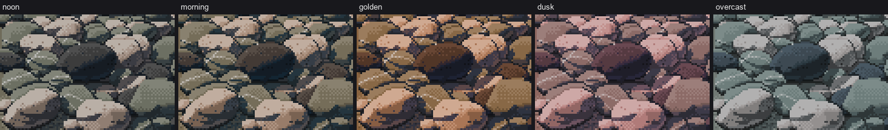
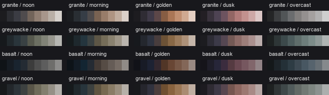
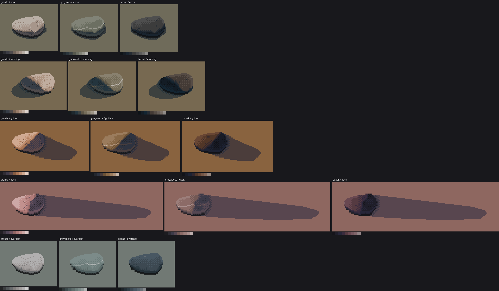
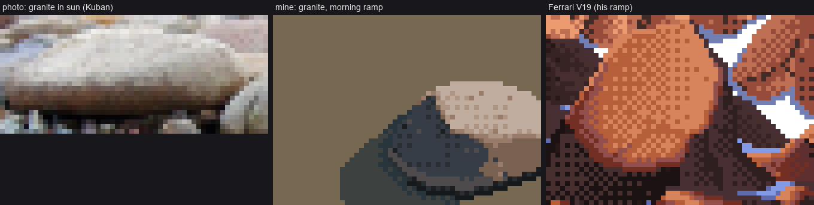

← pockets, not outlines · front page · next: material marks →
When: always. Paint steps (front page), then choose a ramp per rock, hour and wetness at render time.

One index canvas rendered through five palettes. Same stones, same steps, same pixels; only ramp(rock, hour) changes. Made by code/figs.py.
Note the limit: the index map fixes the direction of the light (it decided which pixels are lit). The palette changes the light's colour and key. To move the sun, repaint (sheet D, page 10). This is the same as Ferrari's colour-cycling scenes, where morning and afternoon share one index map.
palette.ramp)Each ramp is built in CIE Lab, from four ingredients:
ROCK = {'granite': dict(L_fl=72, L_sh=30, tint=(45, 4)), # pink-grey
'greywacke': dict(L_fl=62, L_sh=25, tint=(165, 4)), # green-grey
'basalt': dict(L_fl=46, L_sh=16, tint=(260, 5)), # blue-black
'gravel': dict(L_fl=60, L_sh=25, tint=(120, 4))} # the matrix: the rocks' average
HOUR = {'noon': dict(sun=(80, 6), sky=(265, 9), gap=1.0, top=1.0),
'morning': dict(sun=(70, 12), sky=(255, 12), gap=1.05, top=1.0),
'golden': dict(sun=(60, 26), sky=(290, 14), gap=1.2, top=1.05),
'dusk': dict(sun=(20, 18), sky=(305, 16), gap=0.8, top=0.85),
'overcast': dict(sun=(230, 3), sky=(235, 6), gap=0.55, top=0.9)}
def ramp(rock='granite', hour='noon', wet=0.0):
r, h = ROCK[rock], HOUR[hour]
Lfl, Lsh = r['L_fl'], r['L_sh']
g = h['gap']
Lsh_scale = Lsh * (1.0 if g >= 1 else 1 + (1 - g) * 0.9) # overcast: shadows lift
Ls = [Lsh_scale * 0.35, Lsh_scale * 0.62, Lsh_scale * 0.85, Lsh_scale * 1.08]
span = Lfl - Ls[-1]
Ll = [Ls[-1] + span * f for f in (0.28, 0.55, 0.78, 1.0)] + [min(97, Lfl + 12 * h['top'])]
Ls[-1] = min(Ls[-1], Ll[0] - 5) # keep the terminator gap
Lv = np.array(Ls + Ll)
if wet > 0:
Lv[:8] = Lv[:8] * (1 - 0.3 * wet) # wet: darker ...
env = np.array([0.25, 0.45, 0.7, 0.9, 0.85, 1.0, 0.9, 0.7, 0.35]) * (1 + 0.25 * wet) # ... a bit richer
ab = []
for i in range(9):
own = hue(*r['tint']) * (1.2 if i in (4, 5, 6) else 0.8)
light = hue(*h['sun']) if i >= 4 else hue(*h['sky'])
if i == 3:
light = 0.6 * hue(*h['sky']) + 0.4 * hue(*h['sun']) # reflected: bounce off lit gravel
ab.append((own + light) * env[i])
rgb = lab_to_rgb(np.concatenate([Lv[:, None], np.array(ab)], 1))
if wet > 0:
rgb[8] = lab_to_rgb(np.array([min(98, Lfl + 24), *(hue(*h['sun']) * 0.4)])) # the glint
return [tuple(int(c) for c in x) for x in rgb]

The ramps: four materials (rows) under five hours (columns), steps 0–8 from left to right.
gap=0.55) and lifts the shadows. Without a sun, the lit/shadow split nearly vanishes, and so does the cast shadow (stage3.py skips it).
Stage 3: a single cobble of each rock under each hour.

A granite cobble in sun (Kuban) | my granite on the morning ramp | Ferrari's V19 ramp.